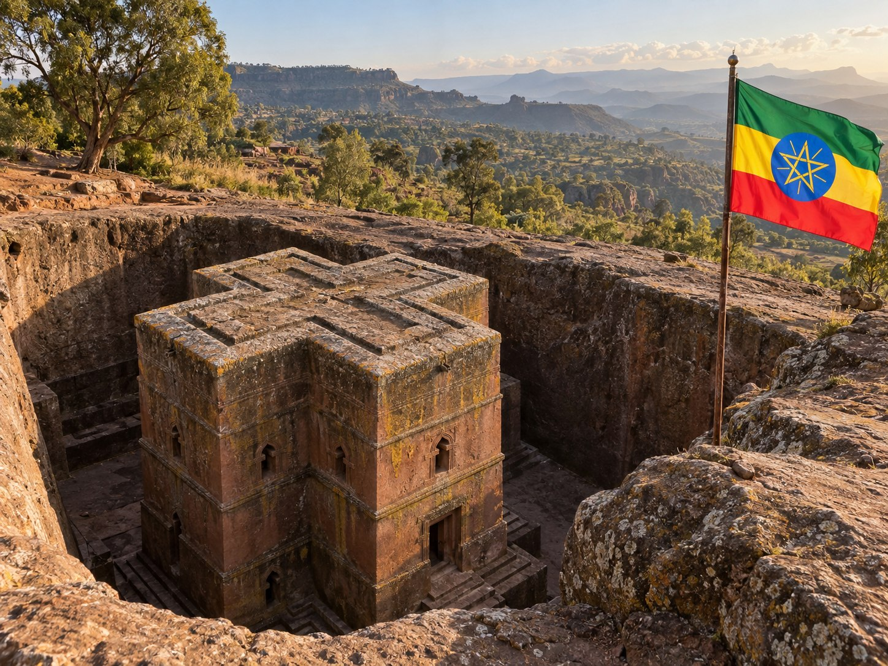
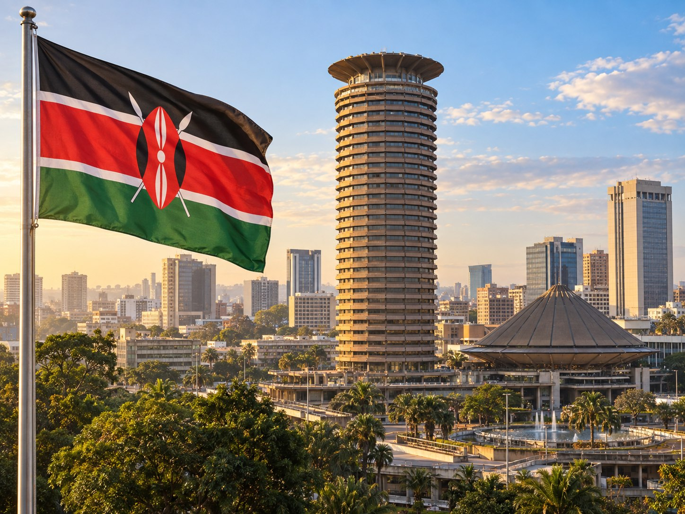
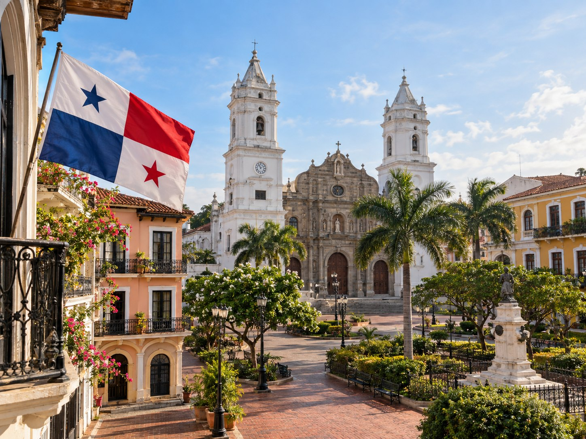
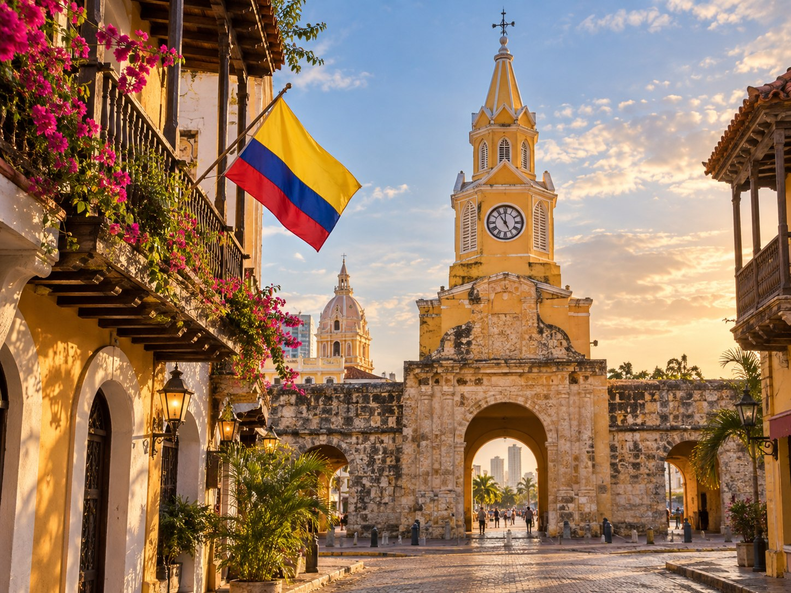
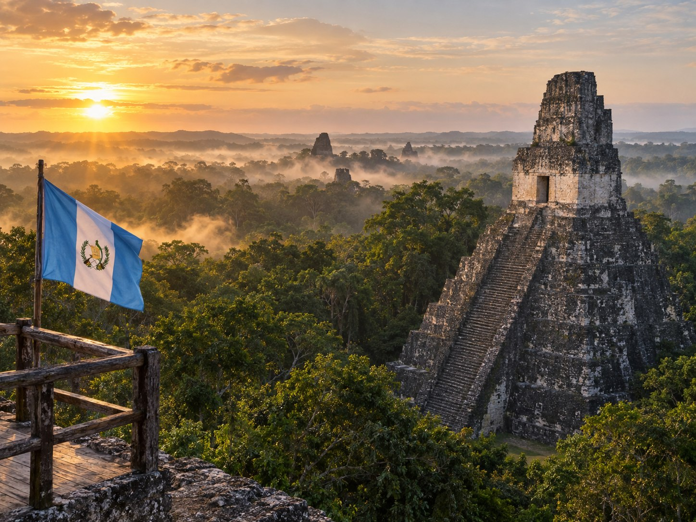
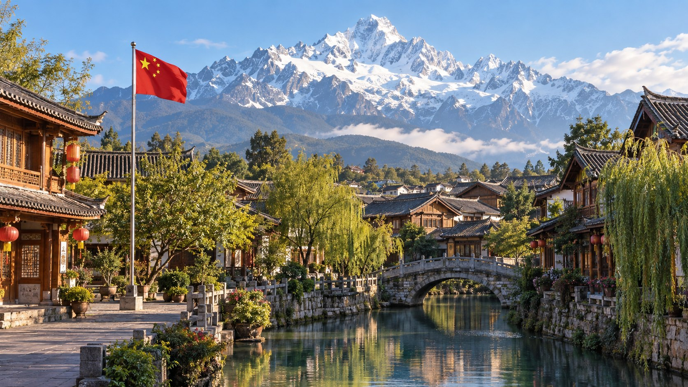

Jasmine · Citrus · Black Tea
The original home of coffee. Bright, floral, and delicately tea-like, with the iconic clarity that started the global specialty coffee movement.

Blackcurrant · Bright Acidity
Known for bold, wine-like acidity and juicy berry notes.

Jasmine · Stone Fruit · Silky
The world's most expensive specialty coffee, famous for extraordinary floral complexity.

Caramel · Nut · Red Apple
Balanced, everyday specialty coffee with gentle sweetness.

Cocoa · Smoked · Spiced
Full-bodied, rich, with warm cocoa and subtle smokiness from volcanic soil.

Caramel · Nutty · Smooth
The birthplace of our future coffee farm, where my family will settle down. Same latitude as the world's top coffee regions, producing rich, approachable beans.